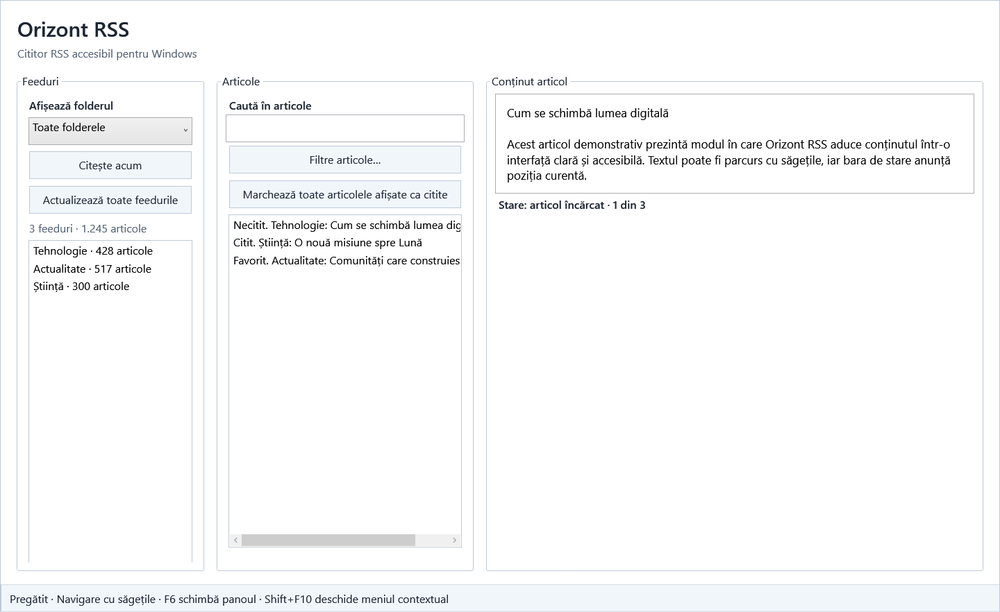
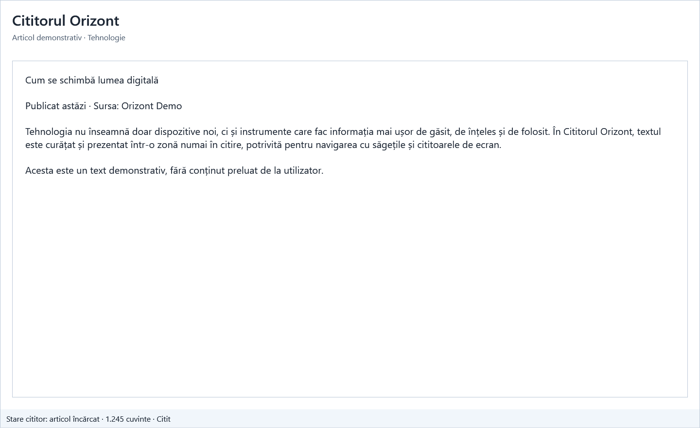
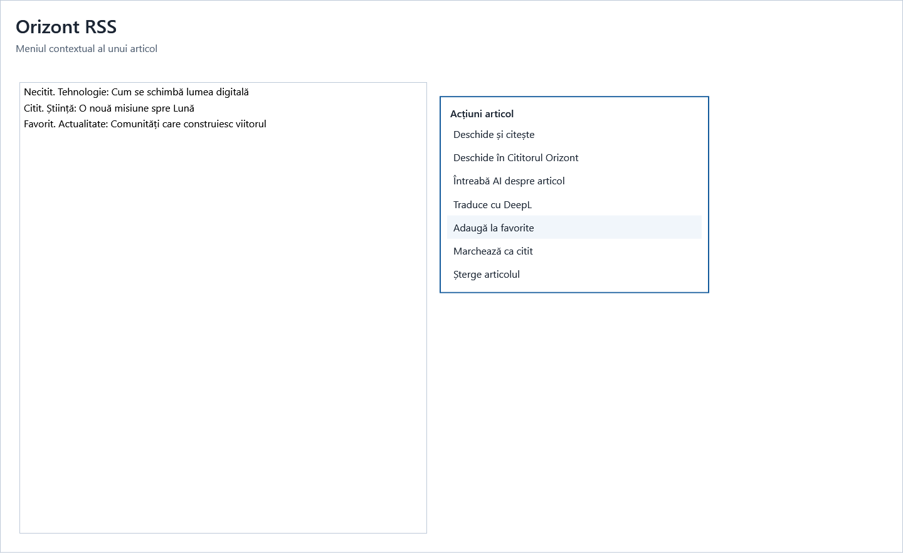
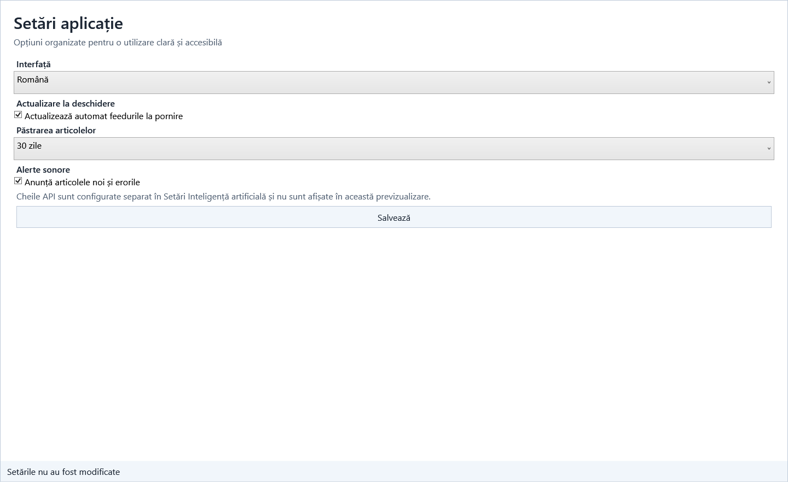

Versión 1.5.3
Versión estable y autónoma para Windows x64. No requiere instalar .NET Runtime por separado.
Instalar Orizont RSS (recomendado)
Descargar la versión portátil (ZIP)
Comprueba el hash SHA-256 mostrado en la página del Release antes de instalar.
Funciones
- carpetas de feeds, etiquetas, favoritos y lista «Leer más tarde»;
- lector integrado con navegación mediante flechas y lectura de voz;
- búsqueda, importación OPML, copias de seguridad y uso compartido;
- conversaciones Gemini y traducción DeepL, activadas explícitamente por el usuario;
- interfaz en rumano, inglés, español, francés, alemán, portugués, húngaro e italiano.
Previsualizaciones de la interfaz
Estas imágenes usan datos de demostración y muestran las áreas principales de la aplicación. No contienen feeds personales ni claves API.




Accesibilidad y privacidad
La aplicación se puede controlar con el teclado y se ha probado con JAWS y NVDA. Los feeds, artículos y claves API permanecen en el perfil local de Windows; el texto solo se envía a Gemini o DeepL cuando el usuario inicia explícitamente la acción.
Ayuda y contribuciones
Orizont RSS fue creado por Grigore Frișan en colaboración con OpenAI Codex, que proporcionó asistencia en diseño, programación, depuración, pruebas, documentación y preparación de versiones de distribución. Detalles de la contribución.
Informar de un problema o proponer una mejora.
El proyecto se distribuye bajo la licencia GPL-3.0-or-later.